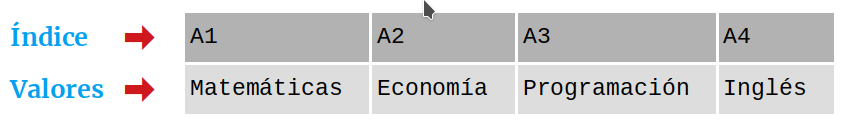
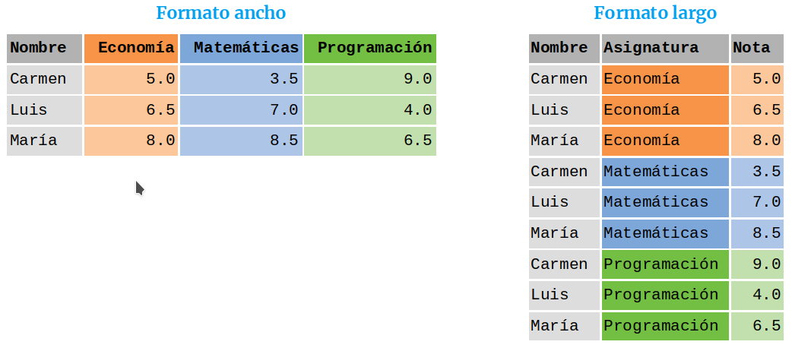

La librería Pandas Pandas es una librería de Python especializada en el manejo y análisis de estructuras de datos. Las principales características de esta librería son: Define nuevas estructuras de datos basadas en los arrays de la librería NumPy pero con nuevas funcionalidades. Permite leer y escribir fácilmente ficheros en formato CSV, Excel y bases de datos SQL. Permite acceder a los datos mediante índices o nombres para filas y columnas. Ofrece métodos para reordenar, dividir y combinar conjuntos de datos. Permite trabajar con series temporales. Realiza todas estas operaciones de manera muy eficiente. Tipos de datos de Pandas Pandas dispone de tres estructuras de datos diferentes: Series: Estructura de una dimensión. DataFrame: Estructura de dos dimensiones (tablas). Panel: Estructura de tres dimensiones (cubos). Estas estructuras se construyen a partir de arrays de la librería NumPy, añadiendo nuevas funcionalidades. La clase de objetos Series Son estructuras similares a los arrays de una dimensión. Son homogéneas, es decir, sus elementos tienen que ser del mismo tipo, y su tamaño es inmutable, es decir, no se puede cambiar, aunque si su contenido. Dispone de un índice que asocia un nombre a cada elemento del la serie, a través de la cuál se accede al elemento. Ejemplo. La siguiente serie contiene las asignaturas de un curso.  Creación de una serie a partir de una lista Series(data=lista, index=indices, dtype=tipo) : Devuelve un objeto de tipo Series con los datos de la lista lista, las filas especificados en la lista indices y el tipo de datos indicado en tipo. Si no se pasa la lista de índices se utilizan como índices los enteros del 0 al $n-1$, done $n$ es el tamaño de la serie. Si no se pasa el tipo de dato se infiere. >>> import pandas as pd >>> s = pd.Series(['Matemáticas', 'Historia', 'Economía', 'Programación', 'Inglés'], dtype='string') >>> print(s) 0 Matemáticas 1 Historia 2 Economía 3 Programación 4 Inglés dtype: string Creación de una serie a partir de un diccionario Series(data=diccionario, index=indices): Devuelve un objeto de tipo Series con los valores del diccionario diccionario y las filas especificados en la lista indices. Si no se pasa la lista de índices se utilizan como índices las claves del diccionario. >>> import pandas as pd >>> s = pd.Series({'Matemáticas': 6.0, 'Economía': 4.5, 'Programación': 8.5}) >>> print(s) Matemáticas 6.0 Economía 4.5 Programación 8.5 dtype: float64 Atributos de una serie Existen varias propiedades o métodos para ver las características de una serie. s.size : Devuelve el número de elementos de la serie s. s.index : Devuelve una lista con los nombres de las filas del DataFrame s. s.dtype : Devuelve el tipo de datos de los elementos de la serie s. >>> import pandas as pd >>> s = pd.Series([1, 2, 2, 3, 3, 3, 4, 4, 4, 4]) >>> s.size 10 >>> s.index RangeIndex(start=0, stop=10, step=1) >>> s.dtype dtype('int64') Acceso a los elementos de una serie El acceso a los elementos de un objeto del tipo Series puede ser a través de posiciones o través de índices (nombres). Acceso por posición Se realiza de forma similar a como se accede a los elementos de un array. s[i] : Devuelve el elemento que ocupa la posición i+1 en la serie s. s[posiciones]: Devuelve otra serie con los elementos que ocupan las posiciones de la lista posiciones. Acceso por índice s[nombre] : Devuelve el elemento con el nombre nombre en el índice. s[nombres] : Devuelve otra serie con los elementos correspondientes a los nombres indicadas en la lista nombres en el índice. >>> s[1:3] Economía 4.5 Programación 8.5 dtype: float64 >>> s['Economía'] 4.5 >>> s[['Programación', 'Matemáticas']] Programación 8.5 Matemáticas 6.0 dtype: float64 Resumen descriptivo de una serie Las siguientes funciones permiten resumir varios aspectos de una serie: s.count() : Devuelve el número de elementos que no son nulos ni NaN en la serie s. s.sum() : Devuelve la suma de los datos de la serie s cuando los datos son de un tipo numérico, o la concatenación de ellos cuando son del tipo cadena str. s.cumsum() : Devuelve una serie con la suma acumulada de los datos de la serie s cuando los datos son de un tipo numérico. s.value_counts() : Devuelve una serie con la frecuencia (número de repeticiones) de cada valor de la serie s. s.min() : Devuelve el menor de los datos de la serie s. s.max() : Devuelve el mayor de los datos de la serie s. s.mean() : Devuelve la media de los datos de la serie s cuando los datos son de un tipo numérico. s.std() : Devuelve la desviación típica de los datos de la serie s cuando los datos son de un tipo numérico. s.describe(): Devuelve una serie con un resumen descriptivo que incluye el número de datos, su suma, el mínimo, el máximo, la media, la desviación típica y los cuartiles. >>> import pandas as pd >>> s = pd.Series([1, 1, 1, 1, 2, 2, 2, 3, 3, 4]) >>> s.count() 10 >>> s.sum() 20 >>> s.cumsum() 0 1 1 2 2 3 3 4 4 6 5 8 6 10 7 13 8 16 9 20 dtype: int64 >>> s.value_counts() 1 4 2 3 3 2 4 1 dtype: int64 >>> s.value_counts(normalize=True) 1 0.4 2 0.3 3 0.2 4 0.1 dtype: float64 >>> s.min() 1 >>> s.max() 4 >>> s.mean() 2.0 >>> s.std() 1.0540925533894598 >>> s.describe() count 10.000000 mean 2.000000 std 1.054093 min 1.000000 25% 1.000000 50% 2.000000 75% 2.750000 max 4.000000 dtype: float64 Aplicar operaciones a una serie Los operadores binarios (+, *, /, etc.) pueden utilizarse con una serie, y devuelven otra serie con el resultado de aplicar la operación a cada elemento de la serie. >>> import pandas as pd s = pd.Series([1, 2, 3, 4]) >>> s*2 0 2 1 4 2 6 3 8 dtype: int64 >>> s%2 0 1 1 0 2 1 3 0 dtype: int64 >>> s = pd.Series(['a', 'b', 'c']) >>> s*5 0 aaaaa 1 bbbbb 2 ccccc dtype: object Aplicar funciones a una serie También es posible aplicar una función a cada elemento de la serie mediante el siguiente método: s.apply(f) : Devuelve una serie con el resultado de aplicar la función f a cada uno de los elementos de la serie s. >>> import pandas as pd >>> from math import log >>> s = pd.Series([1, 2, 3, 4]) >>> s.apply(log) 0 0.000000 1 0.693147 2 1.098612 3 1.386294 dtype: float64 >>> s = pd.Series(['a', 'b', 'c']) >>> s.apply(str.upper) 0 A 1 B 2 C dtype: object Filtrado de una serie Para filtrar una serie y quedarse con los valores que cumplen una determinada condición se utiliza el siguiente método: s[condicion] : Devuelve una serie con los elementos de la serie s que se corresponden con el valor True de la lista booleana condicion. condicion debe ser una lista de valores booleanos de la misma longitud que la serie. >>> import pandas as pd >>> s = pd.Series({'Matemáticas': 6.0, 'Economía': 4.5, 'Programación': 8.5}) >>> print(s[s > 5]) Matemáticas 6.0 Programación 8.5 dtype: float64 Ordenar una serie Para ordenar una serie se utilizan los siguientes métodos: s.sort_values(ascending=booleano) : Devuelve la serie que resulta de ordenar los valores la serie s. Si argumento del parámetro ascending es True el orden es creciente y si es False decreciente. df.sort_index(ascending=booleano) : Devuelve la serie que resulta de ordenar el índice de la serie s. Si el argumento del parámetro ascending es True el orden es creciente y si es False decreciente. >>> import pandas as pd >>> s = pd.Series({'Matemáticas': 6.0, 'Economía': 4.5, 'Programación': 8.5}) >>> print(s.sort_values()) Economía 4.5 Matemáticas 6.0 Programación 8.5 dtype: float64 >>> print(s.sort_index(ascending = False)) Programación 8.5 Matemáticas 6.0 Economía 4.5 dtype: float64 Eliminar los dados desconocidos en una serie Los datos desconocidos representan en Pandas por NaN y los nulos por None. Tanto unos como otros suelen ser un problema a la hora de realizar algunos análisis de datos, por lo que es habitual eliminarlos. Para eliminarlos de una serie se utiliza el siguiente método: s.dropna() : Elimina los datos desconocidos o nulos de la serie s. >>> import pandas as pd >>> import numpy as np >>> s = pd.Series(['a', 'b', None, 'c', np.NaN, 'd']) >>> s 0 a 1 b 2 None 3 c 4 NaN 5 d dtype: object >>> s.dropna() 0 a 1 b 3 c 5 d dtype: object La clase de objetos DataFrame Un objeto del tipo DataFrame define un conjunto de datos estructurado en forma de tabla donde cada columna es un objeto de tipo Series, es decir, todos los datos de una misma columna son del mismo tipo, y las filas son registros que pueden contender datos de distintos tipos. Un DataFrame contiene dos índices, uno para las filas y otro para las columnas, y se puede acceder a sus elementos mediante los nombres de las filas y las columnas. Ejemplo. El siguiente DataFrame contiene información sobre los alumnos de un curso. Cada fila corresponde a un alumno y cada columna a una variable. Creación de un DataFrame a partir de un diccionario de listas Para crear un DataFrame a partir de un diccionario cuyas claves son los nombres de las columnas y los valores son listas con los datos de las columnas se utiliza el método: DataFrame(data=diccionario, index=filas, columns=columnas, dtype=tipos) : Devuelve un objeto del tipo DataFrame cuyas columnas son las listas contenidas en los valores del diccionario diccionario, los nombres de filas indicados en la lista filas, los nombres de columnas indicados en la lista columnas y los tipos indicados en la lista tipos. La lista filas tiene que tener el mismo tamaño que las listas del diccionario, mientras que las listas columnas y tipos tienen que tener el mismo tamaño que el diccionario. Si no se pasa la lista de filas se utilizan como nombres los enteros empezando en 0. Si no se pasa la lista de columnas se utilizan como nombres las claves del diccionario. Si no se pasa la lista de tipos, se infiere. Los valores asociados a las claves del diccionario deben ser listas del mismo tamaño. >>> import pandas as pd >>> datos = {'nombre':['María', 'Luis', 'Carmen', 'Antonio'], ... 'edad':[18, 22, 20, 21], ... 'grado':['Economía', 'Medicina', 'Arquitectura', 'Economía'], ... 'correo':['maria@gmail.com', 'luis@yahoo.es', 'carmen@gmail.com', 'antonio@gmail.com'] ... } >>> df = pd.DataFrame(datos) >>> print(df) nombre edad grado correo 0 María 18 Economía maria@gmail.com 1 Luis 22 Medicina luis@yahoo.es 2 Carmen 20 Arquitectura carmen@gmail.com 3 Antonio 21 Economía antonio@gmail.com Creación de un DataFrame a partir de una lista de listas Para crear un DataFrame a partir de una lista de listas con los datos de las columnas se utiliza el siguiente método: DataFrame(data=listas, index=filas, columns=columnas, dtype=tipos) : Devuelve un objeto del tipo DataFrame cuyas columnas son los valores de las listas de la lista listas, los nombres de filas indicados en la lista filas, los nombres de columnas indicados en la lista columnas y los tipos indicados en la lista tipos. La lista filas, tiene que tener el mismo tamaño que la lista listas mientras que las listas columnas y tipos tienen que tener el mismo tamaño que las listas anidadas en listas. Si no se pasa la lista de filas o de columnas se utilizan enteros empezando en 0. Si no se pasa la lista de tipos, se infiere. Si las listas anidadas en listas no tienen el mismo tamaño, las listas menores se rellenan con valores NaN. >>> import pandas as pd >>> df = pd.DataFrame([['María', 18], ['Luis', 22], ['Carmen', 20]], columns=['Nombre', 'Edad']) >>> print(df) Nombre Edad 0 María 18 1 Luis 22 2 Carmen 20 Creación de un DataFrame a partir de una lista de diccionarios Para crear un DataFrame a partir de una lista de diccionarios con los datos de las filas, se utiliza el siguiente método: DataFrame(data=diccionarios, index=filas, columns=columnas, dtype=tipos) : Devuelve un objeto del tipo DataFrame cuyas filas contienen los valores de los diccionarios de la lista diccionarios, los nombres de filas indicados en la lista filas, los nombres de columnas indicados en la lista columnas y los tipos indicados en la lista tipos. La lista filas tiene que tener el mismo tamaño que la lista lista. Si no se pasa la lista de filas se utilizan enteros empezando en 0. Si no se pasa la lista de columnas se utilizan las claves de los diccionarios. Si no se pasa la lista de tipos, se infiere. Si los diccionarios no tienen las mismas claves, las claves que no aparecen en el diccionario se rellenan con valores NaN. >>> import pandas as pd >>> df = pd.DataFrame([{'Nombre':'María', 'Edad':18}, {'Nombre':'Luis', 'Edad':22}, {'Nombre':'Carmen'}]) >>> print(df) 0 María 18.0 1 Luis 22.0 2 Carmen NaN Creación de un DataFrame a partir de un array Para crear un DataFrame a partir de un array de NumPy se utiliza el siguiente método: DataFrame(data=array, index=filas, columns=columnas, dtype=tipo) : Devuelde un objeto del tipo DataFrame cuyas filas y columnas son las del array array, los nombres de filas indicados en la lista filas, los nombres de columnas indicados en la lista columnas y el tipo indicado en tipo. La lista filas tiene que tener el mismo tamaño que el número de filas del array y la lista columnas el mismo tamaño que el número de columnas del array. Si no se pasa la lista de filas se utilizan enteros empezando en 0. Si no se pasa la lista de columnas se utilizan las claves de los diccionarios. Si no se pasa la lista de tipos, se infiere. >>> import pandas as pd >>> df = pd.DataFrame(np.random.randn(4, 3), columns=['a', 'b', 'c']) >>> print(df) a b c 0 -1.408238 0.644706 1.077434 1 -0.279264 -0.249229 1.019137 2 -0.805470 -0.629498 0.935066 3 0.236936 -0.431673 -0.177379 Creación de un DataFrame a partir de un fichero CSV o Excel Dependiendo del tipo de fichero, existen distintas funciones para importar un DataFrame desde un fichero. read_csv(fichero.csv, sep=separador, header=n, index_col=m, na_values=no-validos, decimal=separador-decimal) : Devuelve un objeto del tipo DataFrame con los datos del fichero CSV fichero.csv usando como separador de los datos la cadena separador. Como nombres de columnas se utiliza los valores de la fila n y como nombres de filas los valores de la columna m. Si no se indica m se utilizan como nombres de filas los enteros empezando en 0. Los valores incluídos en la lista no-validos se convierten en NaN. Para los datos numéricos se utiliza como separador de decimales el carácter indicado en separador-decimal. read_excel(fichero.xlsx, sheet_name=hoja, header=n, index_col=m, na_values=no-validos, decimal=separador-decimal) : Devuelve un objeto del tipo DataFrame con los datos de la hoja de cálculo hoja del fichero Excel fichero.xlsx. Como nombres de columnas se utiliza los valores de la fila n y como nombres de filas los valores de la columna m. Si no se indica m se utilizan como nombres de filas los enteros empezando en 0. Los valores incluídos en la lista no-validos se convierten en NaN. Para los datos numéricos se utiliza como separador de decimales el carácter indicado en separador-decimal. >>> import pandas as pd >>> # Importación del fichero datos-colesteroles.csv >>> df = pd.read_csv( 'https://raw.githubusercontent.com/asalber/manual-python/master/datos/colesteroles.csv', sep=';', decimal=',') >>> print(df.head()) nombre edad sexo peso altura colesterol 0 José Luis Martínez Izquierdo 18 H 85.0 1.79 182.0 1 Rosa Díaz Díaz 32 M 65.0 1.73 232.0 2 Javier García Sánchez 24 H NaN 1.81 191.0 3 Carmen López Pinzón 35 M 65.0 1.70 200.0 4 Marisa López Collado 46 M 51.0 1.58 148.0 Exportación de ficheros También existen funciones para exportar un DataFrame a un fichero con diferentes formatos. df.to_csv(fichero.csv, sep=separador, columns=booleano, index=booleano) : Exporta el DataFrame df al fichero fichero.csv en formato CSV usando como separador de los datos la cadena separador. Si se pasa True al parámetro columns se exporta también la fila con los nombres de columnas y si se pasa True al parámetro index se exporta también la columna con los nombres de las filas. df.to_excel(fichero.xlsx, sheet_name = hoja, columns=booleano, index=booleano) : Exporta el DataFrame df a la hoja de cálculo hoja del fichero fichero.xlsx en formato Excel. Si se pasa True al parámetro columns se exporta también la fila con los nombres de columnas y si se pasa True al parámetro index se exporta también la columna con los nombres de las filas. Atributos de un DataFrame Existen varias propiedades o métodos para ver las características de un DataFrame. df.info() : Devuelve información (número de filas, número de columnas, índices, tipo de las columnas y memoria usado) sobre el DataFrame df. df.shape : Devuelve una tupla con el número de filas y columnas del DataFrame df. df.size : Devuelve el número de elementos del DataFrame. df.columns : Devuelve una lista con los nombres de las columnas del DataFrame df. df.index : Devuelve una lista con los nombres de las filas del DataFrame df. df.dtypes : Devuelve una serie con los tipos de datos de las columnas del DataFrame df. df.head(n) : Devuelve las n primeras filas del DataFrame df. df.tail(n) : Devuelve las n últimas filas del DataFrame df. >>> import pandas as pd >>> df = pd.read_csv( 'https://raw.githubusercontent.com/asalber/manual-python/master/datos/colesterol.csv') >>> df.info() <class 'pandas.core.frame.DataFrame'> RangeIndex: 14 entries, 0 to 13 Data columns (total 6 columns): # Column Non-Null Count Dtype --- ------ -------------- ----- 0 nombre 14 non-null object 1 edad 14 non-null int64 2 sexo 14 non-null object 3 peso 13 non-null float64 4 altura 14 non-null float64 5 colesterol 13 non-null float64 dtypes: float64(3), int64(1), object(2) memory usage: 800.0+ bytes >>> df.shape (14, 6) >>> df.size 84 >>> df.columns Index(['nombre', 'edad', 'sexo', 'peso', 'altura', 'colesterol'], dtype='object') >>> df.index RangeIndex(start=0, stop=14, step=1) >>> df.dtypes nombre object edad int64 sexo object peso float64 altura float64 colesterol float64 dtype: object Renombrar los nombres de las filas y columnas Para cambiar el nombre de las filas y las columnas de un DataFrame se utiliza el siguiente método: df.rename(columns=columnas, index=filas): Devuelve el DataFrame que resulta de renombrar las columnas indicadas en las claves del diccionario columnas con sus valores y las filas indicadas en las claves del diccionario filas con sus valores en el DataFrame df. >>> import pandas as pd >>> df = pd.read_csv( 'https://raw.githubusercontent.com/asalber/manual-python/master/datos/colesterol.csv') >>> print(df.rename(columns={'nombre':'nombre y apellidos', 'altura':'estatura'}, index={0:1000, 1:1001, 2:1002})) nombre y apellidos edad sexo peso estatura colesterol 1000 José Luis Martínez Izquierdo 18 H 85.0 1.79 182.0 1001 Rosa Díaz Díaz 32 M 65.0 1.73 232.0 1002 Javier García Sánchez 24 H NaN 1.81 191.0 3 Carmen López Pinzón 35 M 65.0 1.70 200.0 4 Marisa López Collado 46 M 51.0 1.58 148.0 ... Reindexar un DataFrame Para reordenar los índices de las filas y las columnas de un DataFrame, así como añadir o eliminar índices, se utiliza el siguiente método: df.reindex(index=filas, columns=columnas, fill_value=relleno) : Devuelve el DataFrame que resulta de tomar del DataFrame df las filas con nombres en la lista filas y las columnas con nombres en la lista columnas. Si alguno de los nombres indicados en filas o columnas no existía en el DataFrame df, se crean filan o columnas nuevas rellenas con el valor relleno. >>> import pandas as pd >>> df = pd.read_csv( 'https://raw.githubusercontent.com/asalber/manual-python/master/datos/colesterol.csv') >>> print(df.reindex(index=[4, 3, 1], columns=['nombre', 'tensión', 'colesterol'])) nombre tensión colesterol 4 Marisa López Collado NaN 148.0 3 Carmen López Pinzón NaN 200.0 1 Rosa Díaz Díaz NaN 232.0 Acceso a los elementos de un DataFrame El acceso a los datos de un DataFrame se puede hacer a través de posiciones o través de los nombres de las filas y columnas. Accesos mediante posiciones df.iloc[i, j] : Devuelve el elemento que se encuentra en la fila i y la columna j del DataFrame df. Pueden indicarse secuencias de índices para obtener partes del DataFrame. df.iloc[filas, columnas] : Devuelve un DataFrame con los elementos de las filas de la lista filas y de las columnas de la lista columnas. df.iloc[i] : Devuelve una serie con los elementos de la fila i del DataFrame df. >>> import pandas as pd >>> df = pd.read_csv( 'https://raw.githubusercontent.com/asalber/manual-python/master/datos/colesterol.csv') >>> print(df.iloc[1, 3]) 65 >>> print(df.iloc[1, :2]) nombre Rosa Díaz Díaz edad 32 Acceso a los elementos mediante nombres df.loc[fila, columna] : Devuelve el elemento que se encuentra en la fila con nombre fila y la columna de con nombre columna del DataFrame df. df.loc[filas, columnas] : Devuelve un DataFrame con los elemento que se encuentra en las filas con los nombres de la lista filas y las columnas con los nombres de la lista columnas del DataFrame df. df[columna] : Devuelve una serie con los elementos de la columna de nombre columna del DataFrame df. df.columna : Devuelve una serie con los elementos de la columna de nombre columna del DataFrame df. Es similar al método anterior pero solo funciona cuando el nombre de la columna no tiene espacios en blanco. >>> import pandas as pd >>> df = pd.read_csv( 'https://raw.githubusercontent.com/asalber/manual-python/master/datos/colesterol.csv') >>> print(df.loc[2, 'colesterol']) 191 >>> print(df.loc[:3, ('colesterol','peso')]) colesterol peso 1 232.0 65.0 2 191.0 NaN 3 200.0 65.0 >>> print(df['colesterol']) 0 182.0 1 232.0 2 191.0 3 200.0 ... Operaciones con las columnas de un DataFrame Añadir columnas a un DataFrame El procedimiento para añadir una nueva columna a un DataFrame es similar al de añadir un nuevo par a un diccionario, pero pasando los valores de la columna en una lista o serie. d[nombre] = lista: Añade al DataFrame df una nueva columna con el nombre nombre y los valores de la lista lista. La lista debe tener el mismo tamaño que el número de filas de df. d[nombre] = serie: Añade al DataFrame df una nueva columna con el nombre nombre y los valores de la serie serie. Si el tamaño de la serie es menor que el número de filas de df se rellena con valores NaN mientras que si es mayor se recorta. >>> import pandas as pd >>> df = pd.read_csv( 'https://raw.githubusercontent.com/asalber/manual-python/master/datos/colesterol.csv') >>> df['diabetes'] = pd.Series([False, False, True, False, True]) >>> print(df) nombre edad sexo peso altura colesterol diabetes 0 José Luis Martínez Izquierdo 18 H 85.0 1.79 182.0 False 1 Rosa Díaz Díaz 32 M 65.0 1.73 232.0 False 2 Javier García Sánchez 24 H NaN.0 1.81 191.0 True 3 Carmen López Pinzón 35 M 65.0 1.70 200.0 False 4 Marisa López Collado 46 M 51.0 1.58 148.0 True 5 Antonio Ruiz Cruz 68 H 66.0 1.74 249.0 NaN ... Operaciones sobre columnas Puesto que los datos de una misma columna de un DataFrame son del mismo tipo, es fácil aplicar la misma operación a todos los elementos de la columna. >>> import pandas as pd >>> df = pd.read_csv( 'https://raw.githubusercontent.com/asalber/manual-python/master/datos/colesterol.csv') >>> print(df['altura']*100) 0 179 1 173 2 181 ... >>> print(df['sexo']=='M') 0 False 1 True 2 False ... Aplicar funciones a columnas Para aplicar funciones a todos los elementos de una columna se utiliza el siguiente método: df[columna].apply(f) : Devuelve una serie con los valores que resulta de aplicar la función f a los elementos de la columna con nombre columna del DataFrame df. >>> import pandas as pd >>> from math import log >>> df = pd.read_csv( 'https://raw.githubusercontent.com/asalber/manual-python/master/datos/colesterol.csv') >>> print(df['altura'].apply(log)) 0 0.582216 1 0.548121 2 0.593327 ... Convertir una columna al tipo datetime A menudo una columna contiene cadenas que representan fechas. Para convertir estas cadenas al tipo datetime se utiliza el siguiente método: to_datetime(columna, formato): Devuelve la serie que resulta de convertir las cadenas de la columna con el nombre columna en fechas del tipo datetime con el formado especificado en formato. ( Ver librería datetime) >>> import pandas as pd >>> df = pd.DataFrame({'Name': ['María', 'Carlos', 'Carmen'], 'Nacimiento':['05-03-2000', '20-05-2001', '10-12-1999']}) >>> print(pd.to_datetime(df.Nacimiento, format = '%d-%m-%Y')) 0 2000-03-05 1 2001-05-20 2 1999-12-10 Name: Nacimiento, dtype: datetime64[ns] Resumen descriptivo de un DataFrame Al igual que para las series, los siguientes métodos permiten resumir la información de un DataFrame por columnas: df.count() : Devuelve una serie número de elementos que no son nulos ni NaN en cada columna del DataFrame df. df.sum() : Devuelve una serie con la suma de los datos de las columnas del DataFrame df cuando los datos son de un tipo numérico, o la concatenación de ellos cuando son del tipo cadena str. df.cumsum() : Devuelve un DataFrame con la suma acumulada de los datos de las columnas del DataFrame df cuando los datos son de un tipo numérico. df.min() : Devuelve una serie con los menores de los datos de las columnas del DataFrame df. df.max() : Devuelve una serie con los mayores de los datos de las columnas del DataFrame df. df.mean() : Devuelve una serie con las media de los datos de las columnas del DataFrame df cuando los datos son de un tipo numérico. df.std() : Devuelve una serie con las desviaciones típicas de los datos de las columnas del DataFrame df cuando los datos son de un tipo numérico. df.describe(include = tipo) : Devuelve un DataFrame con un resumen estadístico de las columnas del DataFrame df del tipo tipo. Para los datos numéricos (number) se calcula la media, la desviación típica, el mínimo, el máximo y los cuartiles de las columnas numéricas. Para los datos no numéricos (object) se calcula el número de valores, el número de valores distintos, la moda y su frecuencia. Si no se indica el tipo solo se consideran las columnas numéricas. >>> import pandas as pd >>> df = pd.read_csv( 'https://raw.githubusercontent.com/asalber/manual-python/master/datos/colesterol.csv') >>> print(df.describe()) edad peso altura colesterol count 14.000000 13.000000 14.000000 13.000000 mean 38.214286 70.923077 1.768571 220.230769 std 15.621379 16.126901 0.115016 39.847948 min 18.000000 51.000000 1.580000 148.000000 25% 24.750000 61.000000 1.705000 194.000000 50% 35.000000 65.000000 1.755000 210.000000 75% 49.750000 78.000000 1.840000 249.000000 max 68.000000 109.000000 1.980000 280.000000 >>> print(df.describe(include='object')) nombre sexo count 14 14 unique 14 2 top Antonio Fernández Ocaña H freq 1 8 Eliminar columnas de un DataFrame Para eliminar columnas de un DataFrame se utilizan los siguientes métodos: del d[nombre] : Elimina la columna con nombre nombre del DataFrame df. df.pop(nombre) : Elimina la columna con nombre nombre del DataFrame df y la devuelve como una serie. >>> import pandas as pd >>> df = pd.read_csv( 'https://raw.githubusercontent.com/asalber/manual-python/master/datos/colesterol.csv') >>> edad = df.pop('edad') >>> print(df) nombre sexo peso altura colesterol 0 José Luis Martínez Izquierdo H 85.0 1.79 182.0 1 Rosa Díaz Díaz M 65.0 1.73 232.0 2 Javier García Sánchez H NaN 1.81 191.0 ... print(edad) 0 18 1 32 2 24 ... Operaciones con las filas de un DataFrame Añadir una fila a un DataFrame Para añadir una fila a un DataFrame se utiliza el siguiente método: df.append(serie, ignore_index=True) : Devuelve el DataFrame que resulta de añadir una fila al DataFrame df con los valores de la serie serie. Los nombres del índice de la serie deben corresponderse con los nombres de las columnas de df. Si no se pasa el parámetro ignore_index entonces debe pasarse el parámetro name a la serie, donde su argumento será el nombre de la nueva fila. >>> import pandas as pd >>> df = pd.read_csv( 'https://raw.githubusercontent.com/asalber/manual-python/master/datos/colesterol.csv') >>> df = df.append(pd.Series(['Carlos Rivas', 28, 'H', 89.0, 1.78, 245.0], index=['nombre','edad','sexo','peso','altura','colesterol']), ignore_index=True) >>> print(df.tail()) nombre edad sexo peso altura colesterol 10 Macarena Álvarez Luna 53 M 55.0 1.62 262.0 11 José María de la Guía Sanz 58 H 78.0 1.87 198.0 12 Miguel Angel Cuadrado Gutiérrez 27 H 109.0 1.98 210.0 13 Carolina Rubio Moreno 20 M 61.0 1.77 194.0 14 Carlos Rivas 28 H 89.0 1.78 245.0 Eliminar filas de un DataFrame Para eliminar filas de un DataFrame se utilizan el siguiente método: df.drop(filas) : Devuelve el DataFrame que resulta de eliminar las filas con los nombres indicados en la lista filas del DataFrame df. >>> import pandas as pd >>> df = pd.read_csv( 'https://raw.githubusercontent.com/asalber/manual-python/master/datos/colesterol.csv') >>> print(df.drop([1, 3])) nombre edad sexo peso altura colesterol 0 José Luis Martínez Izquierdo 18 H 85.0 1.79 182.0 2 Javier García Sánchez 24 H NaN 1.81 191.0 4 Marisa López Collado 46 M 51.0 1.58 148.0 ... Filtrado de las filas de un DataFrame Una operación bastante común con un DataFrame es obtener las filas que cumplen una determinada condición. df[condicion] : Devuelve un DataFrame con las filas del DataFrame df que se corresponden con el valor True de la lista booleana condicion. condicion debe ser una lista de valores booleanos de la misma longitud que el número de filas del DataFrame. >>> import pandas as pd >>> df = pd.read_csv( 'https://raw.githubusercontent.com/asalber/manual-python/master/datos/colesterol.csv') >>> print(df[(df['sexo']=='H') & (df['colesterol'] > 260)]) nombre edad sexo peso altura colesterol 6 Antonio Fernández Ocaña 51 H 62.0 1.72 276.0 9 Santiago Reillo Manzano 46 H 75.0 1.85 280.0 Ordenar un DataFrame Para ordenar un DataFrame de acuerdo a los valores de una determinada columna se utilizan los siguientes métodos: df.sort_values(columna, ascending=booleano) : Devuelve el DataFrame que resulta de ordenar las filas del DataFrame df según los valores del la columna con nombre columna. Si argumento del parámetro ascending es True el orden es creciente y si es False decreciente. df.sort_index(ascending=booleano) : Devuelve el DataFrame que resulta de ordenar las filas del DataFrame df según los nombres de las filas. Si el argumento del parámetro ascending es True el orden es creciente y si es False decreciente. >>> import pandas as pd >>> df = pd.read_csv( 'https://raw.githubusercontent.com/asalber/manual-python/master/datos/colesterol.csv') >>> print(df.sort_values('colesterol')) nombre edad sexo peso altura colesterol 4 Marisa López Collado 46 M 51.0 1.58 148.0 0 José Luis Martínez Izquierdo 18 H 85.0 1.79 182.0 2 Javier García Sánchez 24 H NaN 1.81 191.0 13 Carolina Rubio Moreno 20 M 61.0 1.77 194.0 ... Eliminar las filas con dados desconocidos en un DataFrame Para eliminar las filas de un DataFrame que contienen datos desconocidos NaN o nulos None se utiliza el siguiente método: s.dropna(subset=columnas) : Devuelve el DataFrame que resulta de eliminar las filas que contienen algún dato desconocido o nulo en las columnas de la lista columna del DataFrame df. Si no se pasa un argumento al parámetro subset se aplica a todas las columnas del DataFrame. >>> import pandas as pd >>> df = pd.read_csv( 'https://raw.githubusercontent.com/asalber/manual-python/master/datos/colesterol.csv') >>> print(df.dropna()) nombre edad sexo peso altura colesterol 0 José Luis Martínez Izquierdo 18 H 85.0 1.79 182.0 1 Rosa Díaz Díaz 32 M 65.0 1.73 232.0 3 Carmen López Pinzón 35 M 65.0 1.70 200.0 4 Marisa López Collado 46 M 51.0 1.58 148.0 ... Agrupación de un DataFrame En muchas aplicaciones es útil agrupar los datos de un DataFrame de acuerdo a los valores de una o varias columnas (categorías), como por ejemplo el sexo o el país. Dividir un DataFrame en grupos Para dividir un DataFrame en grupos se utiliza el siguiente método: df.groupby(columnas).groups : Devuelve un diccionario con cuyas claves son las tuplas que resultan de todas las combinaciones de los valores de las columnas con nombres en la lista columnas, y valores las listas de los nombres de las filas que contienen esos valores en las correspondientes columnas del DataFrame df. >>> import pandas as pd >>> df = pd.read_csv( 'https://raw.githubusercontent.com/asalber/manual-python/master/datos/colesterol.csv') >>> print(df.groupby('sexo').groups) {'H': Int64Index([0, 2, 5, 6, 8, 9, 11, 12], dtype='int64'), 'M': Int64Index([1, 3, 4, 7, 10, 13], dtype='int64')} >>> print(df.groupby(['sexo','edad']).groups) {('H', 18): Int64Index([0], dtype='int64'), ('H', 24): Int64Index([2], dtype='int64'), ('H', 27): Int64Index([12], dtype='int64'), ('H', 35): Int64Index([8], dtype='int64'), ('H', 46): Int64Index([9], dtype='int64'), ('H', 51): Int64Index([6], dtype='int64'), ('H', 58): Int64Index([11], dtype='int64'), ('H', 68): Int64Index([5], dtype='int64'), ('M', 20): Int64Index([13], dtype='int64'), ('M', 22): Int64Index([7], dtype='int64'), ('M', 32): Int64Index([1], dtype='int64'), ('M', 35): Int64Index([3], dtype='int64'), ('M', 46): Int64Index([4], dtype='int64'), ('M', 53): Int64Index([10], dtype='int64')} Para obtener un grupo concreto se utiliza el siguiente método: df.groupby(columnas).get_group(valores) : Devuelve un DataFrame con las filas del DataFrame df que cumplen que las columnas de la lista columnas presentan los valores de la tupla valores. La lista columnas y la tupla valores deben tener el mismo tamaño. >>> import pandas as pd >>> df = pd.read_csv( 'https://raw.githubusercontent.com/asalber/manual-python/master/datos/colesterol.csv') >>> print(df.groupby('sexo').get_group('M')) nombre edad sexo peso altura colesterol 1 Rosa Díaz Díaz 32 M 65.0 1.73 232.0 3 Carmen López Pinzón 35 M 65.0 1.70 200.0 4 Marisa López Collado 46 M 51.0 1.58 148.0 7 Pilar Martín González 22 M 60.0 1.66 NaN 10 Macarena Álvarez Luna 53 M 55.0 1.62 262.0 13 Carolina Rubio Moreno 20 M 61.0 1.77 194.0 Aplicar una función de agregación por grupos Una vez dividido el DataFame en grupos, es posible aplicar funciones de agregación a cada grupo mediante el siguiente método: df.groupby(columnas).agg(funciones) : Devuelve un DataFrame con el resultado de aplicar las funciones de agregación de la lista funciones a cada uno de los DataFrames que resultan de dividir el DataFrame según las columnas de la lista columnas. Una función de agregación toma como argumento una lista y devuelve una único valor. Algunas de las funciones de agregación más comunes son: np.min : Devuelve el mínimo de una lista de valores. np.max : Devuelve el máximo de una lista de valores. np.count_nonzero : Devuelve el número de valores no nulos de una lista de valores. np.sum : Devuelve la suma de una lista de valores. np.mean : Devuelve la media de una lista de valores. np.std : Devuelve la desviación típica de una lista de valores. >>> import pandas as pd >>> df = pd.read_csv( 'https://raw.githubusercontent.com/asalber/manual-python/master/datos/colesterol.csv') >>> print(df.groupby('sexo').agg(np.mean)) edad peso altura colesterol sexo H 40.875000 80.714286 1.837500 228.375 M 34.666667 59.500000 1.676667 207.200 Reestructurar un DataFrame A menudo la disposición de los datos en un DataFrame no es la adecuada para su tratamiento y es necesario reestructurar el DataFrame. Los datos que contiene un DataFrame pueden organizarse en dos formatos: ancho y largo.  Convertir un DataFrame a formato largo Para convertir un DataFrame de formato ancho a formato largo (columnas a filas) se utiliza el siguiente método: df.melt(id_vars=id-columnas, value_vars=columnas, var_name=nombre-columnas, var_value=nombre-valores) : Devuelve el DataFrame que resulta de convertir el DataFrame df de formato ancho a formato largo. Todas las columnas de lista columnas se reestructuran en dos nuevas columnas con nombres nombre-columnas y nombre-valores que contienen los nombres de las columnas originales y sus valores, respectivamente. Las columnas en la lista id-columnas se mantienen sin reestructurar. Si no se pasa la lista columnas entonces se reestructuran todas las columnas excepto las columnas de la lista id-columnas. >>> import pandas as pd >>> datos = {'nombre':['María', 'Luis', 'Carmen'], ... 'edad':[18, 22, 20], ... 'Matemáticas':[8.5, 7, 3.5], ... 'Economía':[8, 6.5, 5], ... 'Programación':[6.5, 4, 9]} >>> df = pd.DataFrame(datos) >>> df1 = df.melt(id_vars=['nombre', 'edad'], var_name='asignatura', value_name='nota') >>> print(df1) nombre edad asignatura nota 0 María 18 Matemáticas 8.5 1 Luis 22 Matemáticas 7.0 2 Carmen 20 Matemáticas 3.5 3 María 18 Economía 8.0 4 Luis 22 Economía 6.5 5 Carmen 20 Economía 5.0 6 María 18 Programación 6.5 7 Luis 22 Programación 4.0 8 Carmen 20 Programación 9.0 Convertir un DataFrame a formato ancho Para convertir un DataFrame de formato largo a formato ancho (filas a columnas) se utiliza el siguiente método: df.pivot(index=filas, columns=columna, values=valores) : Devuelve el DataFrame que resulta de convertir el DataFrame df de formato largo a formato ancho. Se crean tantas columnas nuevas como valores distintos haya en la columna columna. Los nombres de estas nuevas columnas son los valores de la columna columna mientras que sus valores se toman de la columna valores. Los nombres del índice del nuevo DataFrame se toman de los valores de la columna filas. # Continuación del código anterior >>> print(df1.pivot(index='nombre', columns='asignatura', values='nota')) asignatura Economía Matemáticas Programación nombre Carmen 5.0 3.5 9.0 Luis 6.5 7.0 4.0 María 8.0 8.5 6.5 Pandas Anterior La librería Numpy Siguiente La librería Matplotlib